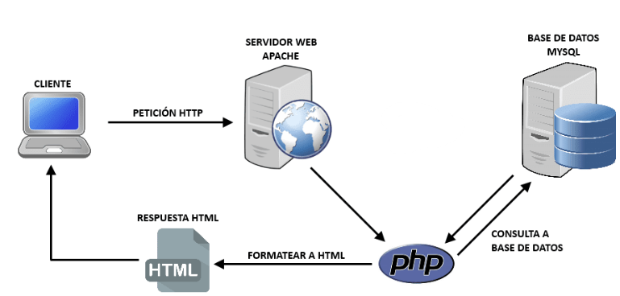

1. Introducción a bases de datos en PHP
Una base de datos es un sistema que permite guardar, organizar y recuperar información de forma eficiente.
En PHP se usan bases de datos para:
- Usuarios y contraseñas 🔐
- Productos, pedidos, reservas 🛒
- Posts, comentarios, mensajes 💬
- Cualquier información que deba persistir entre sesiones
👉 La más habitual con PHP es MySQL / MariaDB.

PHP permite conectarse a bases de datos MySQL usando dos extensiones principales: MySQLi (MySQL Improved) y PDO (PHP Data Objects). Ambas ofrecen funcionalidades similares pero con diferencias importantes en sintaxis y compatibilidad.
1.1. ¿Por qué usar bases de datos?
- Almacenar grandes cantidades de datos de forma estructurada
- Persistencia de datos entre sesiones
- Acceso concurrente de múltiples usuarios
- Búsquedas y consultas complejas eficientes
- Integridad y seguridad de datos
1.2. MySQLi vs PDO
| Característica | MySQLi | PDO |
|---|---|---|
| Soporte de bases de datos | Solo MySQL | 12+ bases de datos (MySQL, PostgreSQL, SQLite, etc.) |
| Estilo de programación | Orientado a objetos y procedural | Solo orientado a objetos |
| Prepared Statements | Sí | Sí |
| Named parameters | No (solo ?) | Sí (? y :nombre) |
| Portabilidad | Baja | Alta |
| Rendimiento | Ligeramente más rápido | Similar |
1.3. Requisitos previos
- Servidor MySQL instalado y corriendo
- PHP con extensión mysqli o PDO habilitada
- Credenciales de acceso (host, usuario, contraseña, base de datos)
2. Conexión con MySQLi
2.1. Conexión básica
<?php
// Datos de conexión
$host = "localhost";
$usuario = "root";
$password = "";
$base_datos = "mi_base_datos";
// Crear conexión
$conexion = new mysqli($host, $usuario, $password, $base_datos);
// Verificar conexión
if ($conexion->connect_error) {
die("Error de conexión: " . $conexion->connect_error);
}
echo "Conexión exitosa";
// Establecer charset UTF-8
$conexion->set_charset("utf8mb4");
// Cerrar conexión
$conexion->close();
?>
3. Conexión con PDO
3.1. Conexión básica
<?php
$host = "localhost";
$db_name = "mi_base_datos";
$usuario = "root";
$password = "";
try {
// DSN (Data Source Name)
$dsn = "mysql:host=$host;dbname=$db_name;charset=utf8mb4";
// Opciones de PDO
$opciones = [
PDO::ATTR_ERRMODE => PDO::ERRMODE_EXCEPTION, // Modo de errores
PDO::ATTR_DEFAULT_FETCH_MODE => PDO::FETCH_ASSOC, // Modo de fetch
PDO::ATTR_EMULATE_PREPARES => false // No emular prepared statements
];
// Crear conexión
$pdo = new PDO($dsn, $usuario, $password, $opciones);
echo "Conexión exitosa";
} catch (PDOException $e) {
die("Error de conexión: " . $e->getMessage());
}
?>
3.2. Clase de conexión reutilizable
<?php
// Database.php
class Database {
private $host = "localhost";
private $db_name = "mi_base_datos";
private $usuario = "root";
private $password = "";
private $conexion;
public function getConexion() {
$this->conexion = null;
try {
$dsn = "mysql:host=" . $this->host . ";dbname=" . $this->db_name . ";charset=utf8mb4";
$opciones = [
PDO::ATTR_ERRMODE => PDO::ERRMODE_EXCEPTION,
PDO::ATTR_DEFAULT_FETCH_MODE => PDO::FETCH_ASSOC,
PDO::ATTR_EMULATE_PREPARES => false
];
$this->conexion = new PDO($dsn, $this->usuario, $this->password, $opciones);
} catch(PDOException $e) {
echo "Error de conexión: " . $e->getMessage();
}
return $this->conexion;
}
}
?>
<!-- Uso -->
<?php
require_once 'Database.php';
$database = new Database();
$conn = $database->getConexion();
?>
3.3. Opciones importantes de PDO
<?php
$opciones = [
// Modo de errores: lanzar excepciones
PDO::ATTR_ERRMODE => PDO::ERRMODE_EXCEPTION,
// Modo de fetch por defecto: array asociativo
PDO::ATTR_DEFAULT_FETCH_MODE => PDO::FETCH_ASSOC,
// No emular prepared statements (más seguro)
PDO::ATTR_EMULATE_PREPARES => false,
// Conexiones persistentes (reutilizar conexiones)
PDO::ATTR_PERSISTENT => true,
// Timeout de conexión (segundos)
PDO::ATTR_TIMEOUT => 5
];
$pdo = new PDO($dsn, $usuario, $password, $opciones);
?>
4. Consultas SELECT con MySQLi
4.1. Consulta simple
<?php
$conexion = new mysqli("localhost", "root", "", "mi_base_datos");
// Ejecutar consulta
$sql = "SELECT id, nombre, email FROM usuarios";
$resultado = $conexion->query($sql);
// Verificar si hay resultados
if ($resultado->num_rows > 0) {
// Recorrer resultados
while ($fila = $resultado->fetch_assoc()) {
echo "ID: " . $fila['id'] . " - ";
echo "Nombre: " . $fila['nombre'] . " - ";
echo "Email: " . $fila['email'] . "<br>";
}
} else {
echo "No se encontraron resultados";
}
// Liberar resultado
$resultado->free();
$conexion->close();
?>
4.2. Prepared Statements (prevenir SQL Injection)
<?php
$conexion = new mysqli("localhost", "root", "", "mi_base_datos");
// Preparar consulta
$sql = "SELECT id, nombre, email FROM usuarios WHERE id = ?";
$stmt = $conexion->prepare($sql);
// Vincular parámetros (tipos: i=integer, s=string, d=double, b=blob)
$id = 5;
$stmt->bind_param("i", $id);
// Ejecutar
$stmt->execute();
// Obtener resultados
$resultado = $stmt->get_result();
while ($fila = $resultado->fetch_assoc()) {
echo "Nombre: " . $fila['nombre'] . "<br>";
}
$stmt->close();
$conexion->close();
?>
4.3. Múltiples parámetros
<?php
$conexion = new mysqli("localhost", "root", "", "mi_base_datos");
$sql = "SELECT * FROM usuarios WHERE edad > ? AND ciudad = ?";
$stmt = $conexion->prepare($sql);
$edad = 18;
$ciudad = "Madrid";
$stmt->bind_param("is", $edad, $ciudad); // i=integer, s=string
$stmt->execute();
$resultado = $stmt->get_result();
while ($fila = $resultado->fetch_assoc()) {
echo $fila['nombre'] . " - " . $fila['edad'] . " años<br>";
}
$stmt->close();
$conexion->close();
?>
4.4. Obtener un solo resultado
<?php
$conexion = new mysqli("localhost", "root", "", "mi_base_datos");
$sql = "SELECT nombre, email FROM usuarios WHERE id = ?";
$stmt = $conexion->prepare($sql);
$id = 10;
$stmt->bind_param("i", $id);
$stmt->execute();
// Vincular variables de resultado
$stmt->bind_result($nombre, $email);
// Obtener valores
if ($stmt->fetch()) {
echo "Nombre: $nombre<br>";
echo "Email: $email<br>";
} else {
echo "Usuario no encontrado";
}
$stmt->close();
$conexion->close();
?>
5. Consultas SELECT con PDO
5.1. Consulta simple
<?php
try {
$pdo = new PDO("mysql:host=localhost;dbname=mi_base_datos", "root", "");
$pdo->setAttribute(PDO::ATTR_ERRMODE, PDO::ERRMODE_EXCEPTION);
// Ejecutar consulta
$sql = "SELECT id, nombre, email FROM usuarios";
$stmt = $pdo->query($sql);
// Recorrer resultados
while ($fila = $stmt->fetch()) {
echo "ID: " . $fila['id'] . " - ";
echo "Nombre: " . $fila['nombre'] . " - ";
echo "Email: " . $fila['email'] . "<br>";
}
} catch (PDOException $e) {
echo "Error: " . $e->getMessage();
}
?>
5.2. Prepared Statements con marcadores posicionales (?)
<?php
try {
$pdo = new PDO("mysql:host=localhost;dbname=mi_base_datos", "root", "");
$pdo->setAttribute(PDO::ATTR_ERRMODE, PDO::ERRMODE_EXCEPTION);
// Preparar consulta
$sql = "SELECT * FROM usuarios WHERE id = ?";
$stmt = $pdo->prepare($sql);
// Ejecutar con parámetros
$id = 5;
$stmt->execute([$id]);
// Obtener resultados
while ($fila = $stmt->fetch()) {
echo "Nombre: " . $fila['nombre'] . "<br>";
}
} catch (PDOException $e) {
echo "Error: " . $e->getMessage();
}
?>
5.3. Prepared Statements con parámetros nombrados (:nombre)
<?php
try {
$pdo = new PDO("mysql:host=localhost;dbname=mi_base_datos", "root", "");
$pdo->setAttribute(PDO::ATTR_ERRMODE, PDO::ERRMODE_EXCEPTION);
// Preparar con parámetros nombrados
$sql = "SELECT * FROM usuarios WHERE edad > :edad AND ciudad = :ciudad";
$stmt = $pdo->prepare($sql);
// Ejecutar con array asociativo
$stmt->execute([
':edad' => 18,
':ciudad' => 'Barcelona'
]);
// Obtener todos los resultados
$usuarios = $stmt->fetchAll();
foreach ($usuarios as $usuario) {
echo $usuario['nombre'] . " - " . $usuario['edad'] . " años<br>";
}
} catch (PDOException $e) {
echo "Error: " . $e->getMessage();
}
?>
5.4. Diferentes modos de fetch
<?php
try {
$pdo = new PDO("mysql:host=localhost;dbname=mi_base_datos", "root", "");
$sql = "SELECT * FROM usuarios WHERE id = ?";
$stmt = $pdo->prepare($sql);
$stmt->execute([5]);
// FETCH_ASSOC: Array asociativo
$usuario = $stmt->fetch(PDO::FETCH_ASSOC);
echo $usuario['nombre'];
// FETCH_OBJ: Objeto
$stmt->execute([5]);
$usuario = $stmt->fetch(PDO::FETCH_OBJ);
echo $usuario->nombre;
// FETCH_NUM: Array numérico
$stmt->execute([5]);
$usuario = $stmt->fetch(PDO::FETCH_NUM);
echo $usuario[1]; // Segunda columna
// fetchAll(): Todos los resultados
$sql = "SELECT * FROM usuarios";
$stmt = $pdo->query($sql);
$todos = $stmt->fetchAll(PDO::FETCH_ASSOC);
// fetchColumn(): Una sola columna
$sql = "SELECT COUNT(*) FROM usuarios";
$total = $pdo->query($sql)->fetchColumn();
echo "Total usuarios: $total";
} catch (PDOException $e) {
echo "Error: " . $e->getMessage();
}
?>
6. INSERT, UPDATE, DELETE con MySQLi
6.1. INSERT - Insertar datos
<?php
$conexion = new mysqli("localhost", "root", "", "mi_base_datos");
// INSERT con prepared statement
$sql = "INSERT INTO usuarios (nombre, email, edad) VALUES (?, ?, ?)";
$stmt = $conexion->prepare($sql);
$nombre = "Juan Pérez";
$email = "juan@ejemplo.com";
$edad = 30;
$stmt->bind_param("ssi", $nombre, $email, $edad);
if ($stmt->execute()) {
echo "Registro insertado correctamente<br>";
echo "ID del nuevo registro: " . $conexion->insert_id;
} else {
echo "Error: " . $stmt->error;
}
$stmt->close();
$conexion->close();
?>
6.2. UPDATE - Actualizar datos
<?php
$conexion = new mysqli("localhost", "root", "", "mi_base_datos");
$sql = "UPDATE usuarios SET nombre = ?, email = ? WHERE id = ?";
$stmt = $conexion->prepare($sql);
$nombre = "María García";
$email = "maria@ejemplo.com";
$id = 5;
$stmt->bind_param("ssi", $nombre, $email, $id);
if ($stmt->execute()) {
echo "Registro actualizado correctamente<br>";
echo "Filas afectadas: " . $stmt->affected_rows;
} else {
echo "Error: " . $stmt->error;
}
$stmt->close();
$conexion->close();
?>
6.3. DELETE - Eliminar datos
<?php
$conexion = new mysqli("localhost", "root", "", "mi_base_datos");
$sql = "DELETE FROM usuarios WHERE id = ?";
$stmt = $conexion->prepare($sql);
$id = 10;
$stmt->bind_param("i", $id);
if ($stmt->execute()) {
if ($stmt->affected_rows > 0) {
echo "Registro eliminado correctamente";
} else {
echo "No se encontró el registro";
}
} else {
echo "Error: " . $stmt->error;
}
$stmt->close();
$conexion->close();
?>
6.4. Insertar múltiples registros
<?php
$conexion = new mysqli("localhost", "root", "", "mi_base_datos");
$sql = "INSERT INTO usuarios (nombre, email, edad) VALUES (?, ?, ?)";
$stmt = $conexion->prepare($sql);
// Array de datos
$usuarios = [
["Ana López", "ana@ejemplo.com", 25],
["Carlos Ruiz", "carlos@ejemplo.com", 32],
["Laura Torres", "laura@ejemplo.com", 28]
];
$stmt->bind_param("ssi", $nombre, $email, $edad);
foreach ($usuarios as $usuario) {
$nombre = $usuario[0];
$email = $usuario[1];
$edad = $usuario[2];
$stmt->execute();
}
echo "Registros insertados: " . count($usuarios);
$stmt->close();
$conexion->close();
?>
7. INSERT, UPDATE, DELETE con PDO
7.1. INSERT - Insertar datos
<?php
try {
$pdo = new PDO("mysql:host=localhost;dbname=mi_base_datos", "root", "");
$pdo->setAttribute(PDO::ATTR_ERRMODE, PDO::ERRMODE_EXCEPTION);
$sql = "INSERT INTO usuarios (nombre, email, edad) VALUES (:nombre, :email, :edad)";
$stmt = $pdo->prepare($sql);
$stmt->execute([
':nombre' => 'Pedro Martínez',
':email' => 'pedro@ejemplo.com',
':edad' => 35
]);
echo "Registro insertado correctamente<br>";
echo "ID del nuevo registro: " . $pdo->lastInsertId();
} catch (PDOException $e) {
echo "Error: " . $e->getMessage();
}
?>
7.2. UPDATE - Actualizar datos
<?php
try {
$pdo = new PDO("mysql:host=localhost;dbname=mi_base_datos", "root", "");
$pdo->setAttribute(PDO::ATTR_ERRMODE, PDO::ERRMODE_EXCEPTION);
$sql = "UPDATE usuarios SET nombre = :nombre, email = :email WHERE id = :id";
$stmt = $pdo->prepare($sql);
$stmt->execute([
':nombre' => 'Isabel Fernández',
':email' => 'isabel@ejemplo.com',
':id' => 5
]);
echo "Registro actualizado correctamente<br>";
echo "Filas afectadas: " . $stmt->rowCount();
} catch (PDOException $e) {
echo "Error: " . $e->getMessage();
}
?>
7.3. DELETE - Eliminar datos
<?php
try {
$pdo = new PDO("mysql:host=localhost;dbname=mi_base_datos", "root", "");
$pdo->setAttribute(PDO::ATTR_ERRMODE, PDO::ERRMODE_EXCEPTION);
$sql = "DELETE FROM usuarios WHERE id = :id";
$stmt = $pdo->prepare($sql);
$stmt->execute([':id' => 10]);
if ($stmt->rowCount() > 0) {
echo "Registro eliminado correctamente";
} else {
echo "No se encontró el registro";
}
} catch (PDOException $e) {
echo "Error: " . $e->getMessage();
}
?>
7.4. Transacciones
<?php
try {
$pdo = new PDO("mysql:host=localhost;dbname=mi_base_datos", "root", "");
$pdo->setAttribute(PDO::ATTR_ERRMODE, PDO::ERRMODE_EXCEPTION);
// Iniciar transacción
$pdo->beginTransaction();
// Operación 1
$sql1 = "INSERT INTO usuarios (nombre, email) VALUES (?, ?)";
$stmt1 = $pdo->prepare($sql1);
$stmt1->execute(['Usuario 1', 'user1@ejemplo.com']);
// Operación 2
$sql2 = "UPDATE cuentas SET saldo = saldo - 100 WHERE id = ?";
$stmt2 = $pdo->prepare($sql2);
$stmt2->execute([1]);
// Si todo es correcto, confirmar
$pdo->commit();
echo "Transacción completada exitosamente";
} catch (PDOException $e) {
// Si hay error, revertir cambios
$pdo->rollBack();
echo "Error en la transacción: " . $e->getMessage();
}
?>
8. Ejemplo completo: Sistema CRUD
8.1. Listar usuarios (index.php)
<?php
// Conexión PDO
try {
$pdo = new PDO("mysql:host=localhost;dbname=mi_base_datos", "root", "");
$pdo->setAttribute(PDO::ATTR_ERRMODE, PDO::ERRMODE_EXCEPTION);
// Obtener todos los usuarios
$sql = "SELECT * FROM usuarios ORDER BY id DESC";
$stmt = $pdo->query($sql);
$usuarios = $stmt->fetchAll();
} catch (PDOException $e) {
die("Error: " . $e->getMessage());
}
?>
<!DOCTYPE html>
<html>
<head>
<title>Lista de Usuarios</title>
<style>
table { border-collapse: collapse; width: 100%; }
th, td { border: 1px solid #ddd; padding: 8px; text-align: left; }
th { background-color: #4CAF50; color: white; }
</style>
</head>
<body>
<h1>Lista de Usuarios</h1>
<a href="crear.php">Agregar Nuevo Usuario</a>
<table>
<tr>
<th>ID</th>
<th>Nombre</th>
<th>Email</th>
<th>Edad</th>
<th>Acciones</th>
</tr>
<?php foreach ($usuarios as $usuario): ?>
<tr>
<td><?php echo htmlspecialchars($usuario['id']); ?></td>
<td><?php echo htmlspecialchars($usuario['nombre']); ?></td>
<td><?php echo htmlspecialchars($usuario['email']); ?></td>
<td><?php echo htmlspecialchars($usuario['edad']); ?></td>
<td>
<a href="editar.php?id=<?php echo $usuario['id']; ?>">Editar</a> |
<a href="eliminar.php?id=<?php echo $usuario['id']; ?>"
onclick="return confirm('¿Estás seguro?')">Eliminar</a>
</td>
</tr>
<?php endforeach; ?>
</table>
</body>
</html>
8.2. Crear usuario (crear.php)
<?php
if ($_SERVER['REQUEST_METHOD'] === 'POST') {
try {
$pdo = new PDO("mysql:host=localhost;dbname=mi_base_datos", "root", "");
$pdo->setAttribute(PDO::ATTR_ERRMODE, PDO::ERRMODE_EXCEPTION);
$sql = "INSERT INTO usuarios (nombre, email, edad) VALUES (:nombre, :email, :edad)";
$stmt = $pdo->prepare($sql);
$stmt->execute([
':nombre' => $_POST['nombre'],
':email' => $_POST['email'],
':edad' => $_POST['edad']
]);
header("Location: index.php");
exit;
} catch (PDOException $e) {
$error = "Error: " . $e->getMessage();
}
}
?>
<!DOCTYPE html>
<html>
<head>
<title>Crear Usuario</title>
</head>
<body>
<h1>Crear Nuevo Usuario</h1>
<?php if (isset($error)): ?>
<p style="color: red;"><?php echo $error; ?></p>
<?php endif; ?>
<form method="POST">
<label>Nombre:</label>
<input type="text" name="nombre" required><br><br>
<label>Email:</label>
<input type="email" name="email" required><br><br>
<label>Edad:</label>
<input type="number" name="edad" required><br><br>
<button type="submit">Guardar</button>
<a href="index.php">Cancelar</a>
</form>
</body>
</html>
8.3. Editar usuario (editar.php)
<?php
try {
$pdo = new PDO("mysql:host=localhost;dbname=mi_base_datos", "root", "");
$pdo->setAttribute(PDO::ATTR_ERRMODE, PDO::ERRMODE_EXCEPTION);
$id = $_GET['id'] ?? 0;
if ($_SERVER['REQUEST_METHOD'] === 'POST') {
// Actualizar
$sql = "UPDATE usuarios SET nombre = :nombre, email = :email, edad = :edad WHERE id = :id";
$stmt = $pdo->prepare($sql);
$stmt->execute([
':nombre' => $_POST['nombre'],
':email' => $_POST['email'],
':edad' => $_POST['edad'],
':id' => $id
]);
header("Location: index.php");
exit;
}
// Obtener datos del usuario
$sql = "SELECT * FROM usuarios WHERE id = :id";
$stmt = $pdo->prepare($sql);
$stmt->execute([':id' => $id]);
$usuario = $stmt->fetch();
if (!$usuario) {
die("Usuario no encontrado");
}
} catch (PDOException $e) {
die("Error: " . $e->getMessage());
}
?>
<!DOCTYPE html>
<html>
<head>
<title>Editar Usuario</title>
</head>
<body>
<h1>Editar Usuario</h1>
<form method="POST">
<label>Nombre:</label>
<input type="text" name="nombre" value="<?php echo htmlspecialchars($usuario['nombre']); ?>" required><br><br>
<label>Email:</label>
<input type="email" name="email" value="<?php echo htmlspecialchars($usuario['email']); ?>" required><br><br>
<label>Edad:</label>
<input type="number" name="edad" value="<?php echo htmlspecialchars($usuario['edad']); ?>" required><br><br>
<button type="submit">Actualizar</button>
<a href="index.php">Cancelar</a>
</form>
</body>
</html>
8.4. Eliminar usuario (eliminar.php)
<?php
try {
$pdo = new PDO("mysql:host=localhost;dbname=mi_base_datos", "root", "");
$pdo->setAttribute(PDO::ATTR_ERRMODE, PDO::ERRMODE_EXCEPTION);
$id = $_GET['id'] ?? 0;
$sql = "DELETE FROM usuarios WHERE id = :id";
$stmt = $pdo->prepare($sql);
$stmt->execute([':id' => $id]);
header("Location: index.php");
exit;
} catch (PDOException $e) {
die("Error: " . $e->getMessage());
}
?>
Resumen de Base de Datos en PHP
- MySQLi solo funciona con MySQL; PDO es compatible con múltiples bases de datos
- Usar prepared statements siempre para prevenir SQL Injection
- MySQLi usa ? como marcador; PDO permite ? y :nombre
- mysqli->insert_id o pdo->lastInsertId() obtienen el último ID insertado
- affected_rows o rowCount() indican filas afectadas
- PDO permite transacciones con beginTransaction(), commit() y rollBack()
- Siempre usar try-catch con PDO para manejar errores
- Establecer charset UTF-8 para evitar problemas de caracteres
- Usar htmlspecialchars() al mostrar datos de la base de datos
- PDO es más recomendado por su portabilidad y características avanzadas